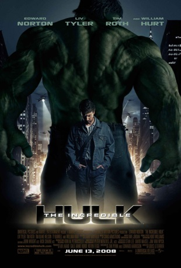
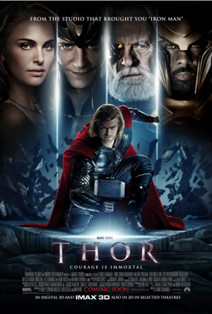

Homem de Ferro

Resumo sobre o Filme:
Tony Stark é um industrial bilionário e inventor brilhante que realiza testes bélicos no exterior, mas é sequestrado por terroristas que o forçam a construir uma arma devastadora. Em vez disso, ele constrói uma armadura blindada e enfrenta seus sequestradores. Quando volta aos Estados Unidos, Stark aprimora a armadura e a utiliza para combater o crime.
Hulk

Resumo sobre o Filme:
Bruce Banner é um cientista e trabalha ao lado de sua grande paixão, a bela Betty Ross, em um projeto que envolve a reconstituição de tecidos com a utilização da radiação gama. O problema todo começa quando, após ter seus genes alterados por um acidente envolvendo a radiação gama, Bruce Banner passa a se transformar em um ser gigantesco e verde que expressa no corpo todos os seus demônios mais íntimos e pessoais.
Thor

Resumo sobre o Filme:
Thor, filho de Odin, o rei dos deuses nórdicos, logo herdará o trono de Asgard de seu idoso pai. No entanto, no dia de sua coroação, Thor reage com brutalidade quando os inimigos dos deuses entram no palácio violando o tratado. Como punição, Odin manda Thor para a Terra. Enquanto seu irmão Loki conspira em Asgard, Thor, agora sem seus poderes, enfrenta sua maior ameaça.